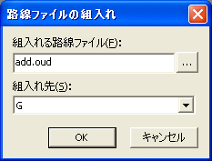

現在編集している路線ファイルの任意の位置に、他の路線ファイルの内容を追加することができます。
たとえば、 A駅-B駅間の路線ファイルとB駅-C駅間の路線ファイルがある場合に、A駅-B駅間の路線ファイルの終点にB駅-C駅間の路線ファイルの内容を追加して、A駅-B駅-C駅間の路線ファイルとすることができます。
(1) [駅ビュー]を開いた状態で、メニュー[ファイル]-[路線ファイルの組入れ/切り出し]-[路線ファイルの組入れ]を選択してください。
→[路線ファイルの組入れ]ダイアログが開きます。
(2)[路線ファイルの組入れ]ダイアログ

以下の内容を入力して、[OK]を押してください。
[組入れる路線ファイル]： 組入れる路線ファイル名を指定してください。
[...]を押すと、ファイル選択ダイアログが開きます。ファイル選択ダイアログでファイルを選択することもできます。
[組入れ先]： 路線ファイルを組入れる位置を、駅名で指定してください。
→[OK]を押すと、組入れ処理が実行されます。
この機能は、組入れたファイルとの間の直通列車の直通化(一本化)は行いません。
列車の直通化(一本化)は、別途行う必要があります。
この方法は、『2.3.9.２本の列車を１本の直通列車にする』を参照してください。
参照： 2.3.9.２本の列車を１本の直通列車にする
(1) OuDiaは、『組入れる路線ファイル』のすべての駅を、『現在編集している路線ファイル』の『組入れ先』に追加します。
※ 『組入れる路線ファイル』の起点・終点駅と、『現在編集している路線ファイル』の『組入れ先』の駅名が同じである場合、OuDiaはこの2駅を同一駅とみなします。
(2) OuDiaは、『組入れる路線ファイル』のすべての列車種別を『現在編集している路線ファイル』に追加します。
但し、同名の列車種別が『現在編集している路線ファイル』にすでに存在している場合は、OuDiaはその列車種別を追加しません。
(3) OuDiaは、『組入れる路線ファイル』のすべてのダイヤを『現在編集している路線ファイル』に追加します。
但し、同名のダイヤが『現在編集している路線ファイル』にすでに存在している場合は、OuDiaはそのダイヤを追加しません。
(4) OuDiaは、『組入れる路線ファイル』のすべてのダイヤのすべての列車を、『現在編集している路線ファイル』の、同名のダイヤに追加します。
(5) OuDiaは、『組入れる路線ファイル』のコメントを、『現在編集している路線ファイル』のコメントの末尾に追加します。